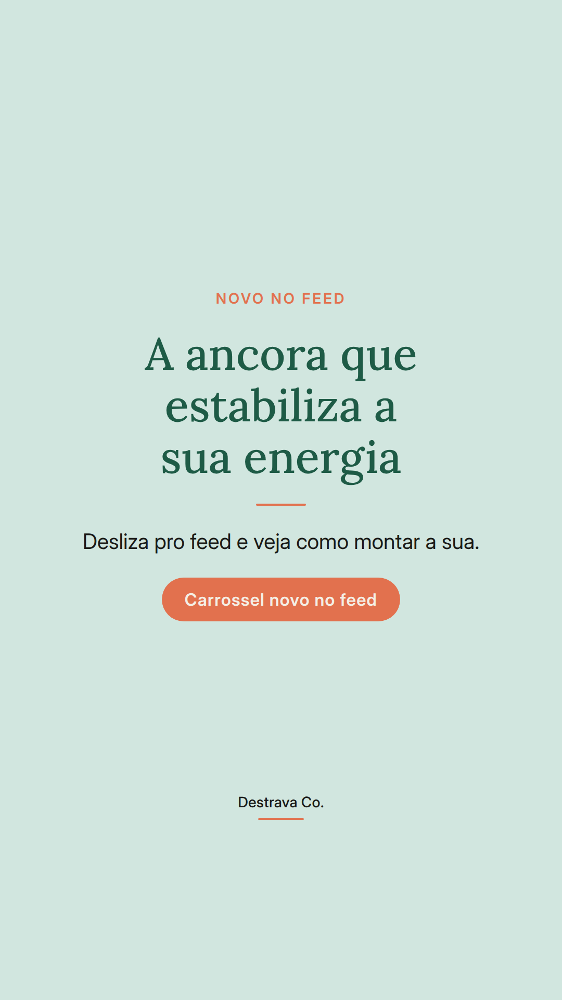
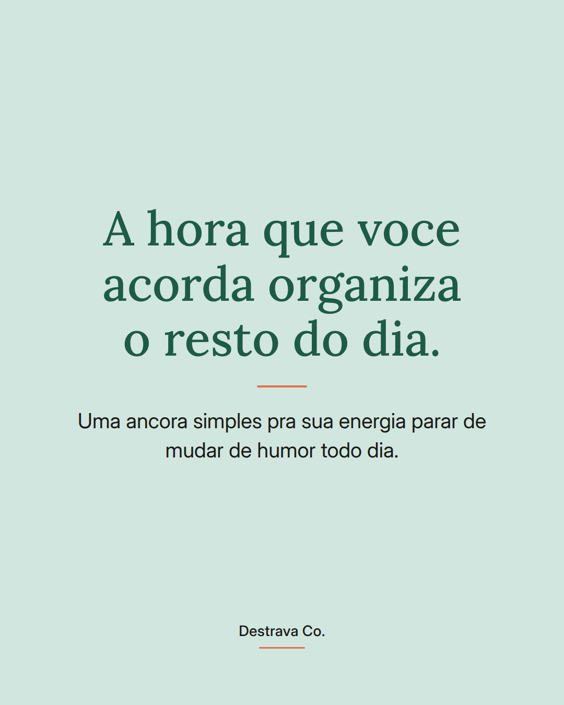
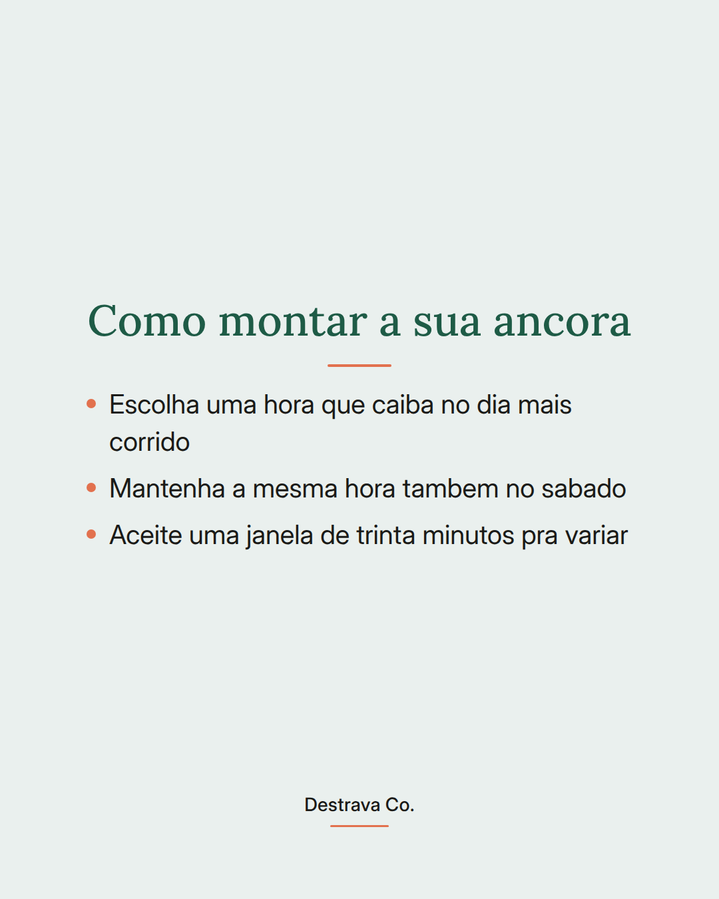
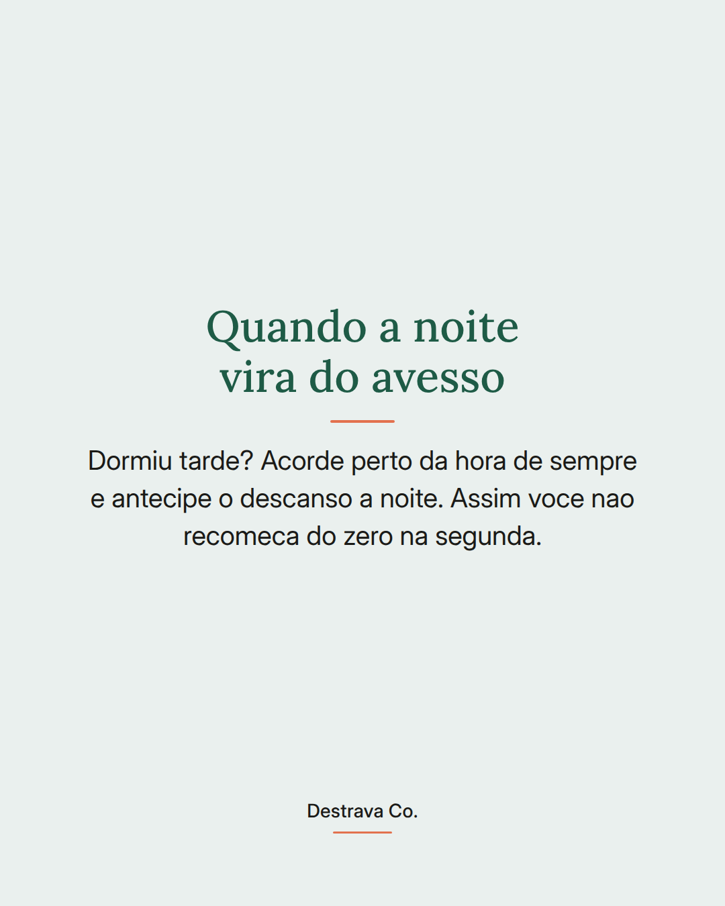

Energia mais estavel comeca pelo horario que voce acorda, nao pela forca de vontade.
Quando a hora de levantar muda todo dia, o corpo passa a semana se reajustando. Dai vem aquela sensacao de cansaco que nenhum cafe resolve.
A proposta e simples: escolha uma hora que caiba ate no seu dia mais corrido e repita, inclusive no fim de semana. Uma janela de meia hora pra mais ou pra menos ja basta.
E se a noite virar do avesso, acorde perto da hora de sempre e durma mais cedo depois. Nao precisa esperar a proxima segunda pra retomar.
Salva pra lembrar amanha de manha e compartilha com quem acorda cansada todo dia. No link da bio voce encontra o Destrava 21 e o metodo D.R.A.